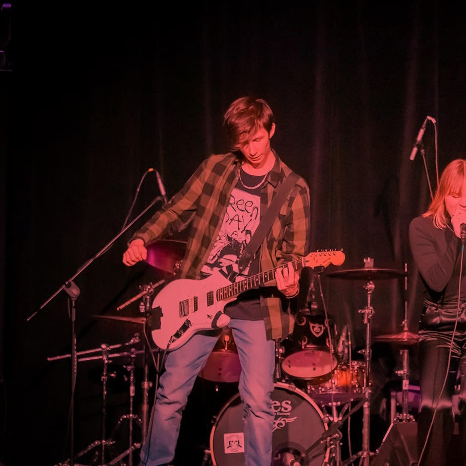

Our band
We are an alternative grunge band called PTSD, and we have been playing together since November. Our music is heavily influenced by bands such as Alice In Chains, Nirvana, Pearl Jam, The Smashing Pumpkins, and Illusion. We have a deep appreciation for independent bands and draw inspiration from their unique sounds.
As a band, we thrive on exploring darker tones and emotions within our music. We enjoy creating an intense and atmospheric experience for our listeners. Playing live is something we truly love, as it allows us to connect with the energy of the audience and share our music in its raw form. We embrace the spontaneity of live performances and often incorporate elements of improvisation to keep each show unique and exciting.
Creativity flows through our veins, and we constantly generate new ideas for songs. We are not afraid to experiment and push the boundaries of our sound. Each band member brings their own artistic perspective and unique contributions to the table, resulting in a dynamic and cohesive musical experience.
In a world of alternative grunge, we strive to carve out our own path, delivering authentic and evocative music that resonates with our audience. With our love for the genre and our dedication to our craft, we are determined to make a lasting impact with our distinctive sound as PTSD.

My music
I am proud to be a member of the band PTSD. One of my main roles in the band is composing our songs. I take great pleasure in writing the melodies, riffs, and overall musical structure that define our sound. Collaborating closely with our bassist, Inga, and our exceptional drummer.
Lena (our drummer), is undeniably the heartbeat of our band. With her exceptional skills and innate sense of rhythm, she brings a powerful and dynamic energy to our music. Her ability to create solid and infectious beats forms the foundation upon which our songs come to life.
As an individual, my passion for music extends beyond the band. I have a strong inclination towards songwriting and spend a significant amount of time recording my own demos. These demos serve as a creative outlet where I explore various musical ideas and experiment with different sounds. Some of these demos eventually find their place within the repertoire of PTSD, becoming fully-fledged songs that we perform together. Others, however, take on a life of their own and exist as separate entities, reflecting the diverse range of musical expressions that flow through me.
Writing music is not just a hobby for me; it is an essential part of my identity and a means of expressing my emotions and experiences. Through the process of crafting melodies, capturing lyrical themes, and experimenting with different musical arrangements, I am constantly seeking to connect with our audience and create a profound impact through our art.
Here some of my demos:
"My dog is dying":
"Eyes Of Fear":
"Stressed Out":
"I can't count":
"Before I Die":